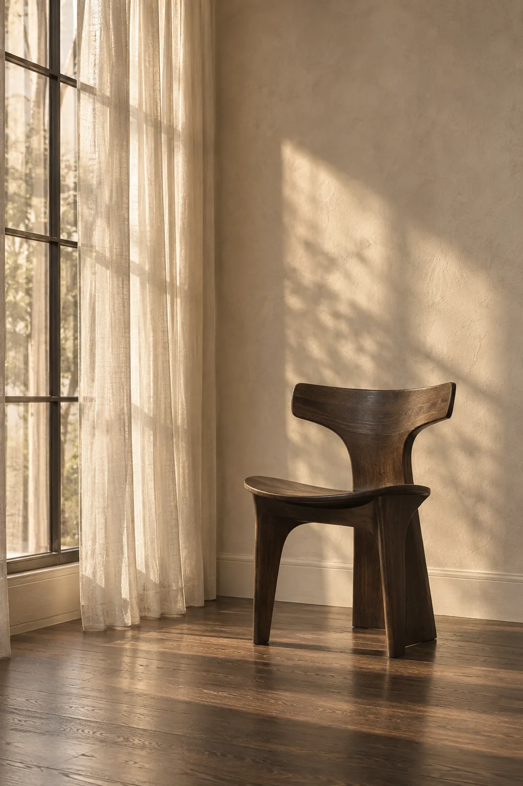

Restraint
The strongest statement is usually the shortest. Edit until only the essential is left, then stop.
A private practice
Taste, craft & the discipline of restraint.
(00)Manifesto
Nothing here is loud. Every detail is considered, every line is earned, and whatever does not belong has been removed. What remains is a signature: quiet, exacting, and impossible to mistake for anyone else.
(01)Selected works
Four studies in material and light. A small body of work, chosen rather than collected.
(02)Principles
The strongest statement is usually the shortest. Edit until only the essential is left, then stop.
Proportion, spacing, timing. The details nobody names are the ones everybody feels.
Made to outlast the season it was made in. Nothing here is built for a trend.

(03)About
Alex works quietly and selectively: a small number of commitments at a time, each given full attention from the first conversation to the final detail.
This page is the short version. The long one is better told in person.
Alex
(04)Enquiries
Private enquiries are read and answered personally.